R/geom-boxplot2.R, R/stat-boxplot2.R
geom_boxplot2.RdThe boxplot compactly displays the distribution of a continuous variable. It
displays five summary statistics (the median, two hinges and two whiskers),
and all "outlying" points individually. geom_boxplot2() is a variant
on the geom_boxplot function from the ggplot2 package.
It allows users to set whisker limits based upon a confidence interval rather
than a multiple of the IQR, allows to display outliers with jitter, and
provides slightly different graphical styles when grouping/coloring is used.
geom_boxplot2(
mapping = NULL,
data = NULL,
stat = "boxplot2",
position = "dodge2",
...,
median_symbol = TRUE,
outlier.position = "jitter",
outlier.colour = NULL,
outlier.color = NULL,
outlier.fill = NULL,
outlier.shape = 21,
outlier.size = 1.5,
outlier.stroke = 0.5,
outlier.alpha = NULL,
whisker.cap = FALSE,
notch = FALSE,
notchwidth = 0.5,
varwidth = FALSE,
na.rm = FALSE,
orientation = NA,
show.legend = NA,
inherit.aes = TRUE
)
stat_boxplot2(
mapping = NULL,
data = NULL,
geom = "boxplot2",
position = "dodge2",
...,
coef = 1.5,
na.rm = FALSE,
orientation = NA,
show.legend = NA,
inherit.aes = TRUE
)Set of aesthetic mappings created by aes(). If specified and
inherit.aes = TRUE (the default), it is combined with the default mapping
at the top level of the plot. You must supply mapping if there is no plot
mapping.
The data to be displayed in this layer. There are three options:
If NULL, the default, the data is inherited from the plot
data as specified in the call to ggplot().
A data.frame, or other object, will override the plot
data. All objects will be fortified to produce a data frame. See
fortify() for which variables will be created.
A function will be called with a single argument,
the plot data. The return value must be a data.frame, and
will be used as the layer data. A function can be created
from a formula (e.g. ~ head(.x, 10)).
Position adjustment, either as a string naming the adjustment
(e.g. "jitter" to use position_jitter), or the result of a call to a
position adjustment function. Use the latter if you need to change the
settings of the adjustment.
Other arguments passed on to layer(). These are
often aesthetics, used to set an aesthetic to a fixed value, like
colour = "red" or size = 3. They may also be parameters
to the paired geom/stat.
a logical value indicating whether to use a symbol
(TRUE) or a line (FALSE) to represent the median when a color
aesthetic is used.
By default, outliers are displayed with a small degree of jitter. Sometimes
it can be useful to hide the outliers, for example when overlaying the raw
data points on top of the boxplot. Hiding the outliers can be achieved by
setting outlier.position = NULL. Importantly, this does not remove
the outliers, it only hides them, so the range calculated for the y-axis
will be the same with outliers shown and outliers hidden. If needed,
outliers can be displayed without jitter by setting outlier.position
= 'identity'.
Aesthetics for outliers inherited from the original
geom_boxplot function but that are not used in
geom_boxplot2. Instead, outliers inherits colors, shapes, sizes from
the box aesthetics. These aesthetics were included to maintain code
compatibility with call to geom_boxplot.
If FALSE (default), the whiskers are simple
segments. If TRUE, the end of the whiskers are delineated by
orthogonal segments.
If FALSE (default) make a standard box plot. If
TRUE, make a notched box plot. Notches are used to compare groups;
if the notches of two boxes do not overlap, this suggests that the medians
are significantly different.
For a notched box plot, width of the notch relative to
the body (defaults to notchwidth = 0.5).
If FALSE (default) make a standard box plot. If
TRUE, boxes are drawn with widths proportional to the
square-roots of the number of observations in the groups (possibly
weighted, using the weight aesthetic).
If FALSE, the default, missing values are removed with
a warning. If TRUE, missing values are silently removed.
The orientation of the layer. The default (NA)
automatically determines the orientation from the aesthetic mapping. In the
rare event that this fails it can be given explicitly by setting orientation
to either "x" or "y". See the Orientation section for more detail.
logical. Should this layer be included in the legends?
NA, the default, includes if any aesthetics are mapped.
FALSE never includes, and TRUE always includes.
It can also be a named logical vector to finely select the aesthetics to
display.
If FALSE, overrides the default aesthetics,
rather than combining with them. This is most useful for helper functions
that define both data and aesthetics and shouldn't inherit behaviour from
the default plot specification, e.g. borders().
Use to override the default connection between
geom_boxplot2 and stat_boxplot2.
Length of the whiskers as multiple of IQR (if lower than 50) or a confidence interval (if greater than or equal to 50). Defaults to 1.5.
This geom treats each axis differently and, thus, can thus have two orientations. Often the orientation is easy to deduce from a combination of the given mappings and the types of positional scales in use. Thus, ggplot2 will by default try to guess which orientation the layer should have. Under rare circumstances, the orientation is ambiguous and guessing may fail. In that case the orientation can be specified directly using the orientation parameter, which can be either "x" or "y". The value gives the axis that the geom should run along, "x" being the default orientation you would expect for the geom.
The lower and upper hinges correspond to the first and third quartiles (the
25th and 75th percentiles). This differs slightly from the method used by the
boxplot function, and may be apparent with small
samples. See boxplot.stats for for more information
on how hinge positions are calculated for boxplot.
By default, the upper whisker extends from the hinge to the largest value no
further than 1.5 * IQR from the hinge (where IQR is the inter-quartile range,
or distance between the first and third quartiles). The lower whisker extends
from the hinge to the smallest value at most 1.5 * IQR of the hinge. Data
beyond the end of the whiskers are called "outlying" points and are plotted
individually. If a coef argument is provided to the function call, the
whiskers may extend to alternative limits. If coef is set to a value
lower than 50, the value is used a multiplier to the IQR (default is 1.5 as
explained above). If coef is set to value greater than or equal to 50,
the whiskers extend to the limit of the coef confidence interval.
In a notched box plot, the notches extend 1.58 * IQR / sqrt(n). This
gives a roughly 95
al. (1978) for more details.
geom_boxplot2() understands the following aesthetics (required aesthetics are in bold):
x or y
lower or xlower
upper or xupper
middle or xmiddle
ymin or xmin
ymax or xmax
alpha
colour
fill
group
linetype
linewidth
shape
size
stroke
weight
Learn more about setting these aesthetics in vignette("ggplot2-specs").
width of boxplot
lower whisker = smallest observation greater than or equal to lower hinge - 1.5 * IQR or lower limit of the confidence interval
lower hinge, 25% quantile
lower edge of notch = median - 1.58 * IQR / sqrt(n)
median, 50% quantile
upper edge of notch = median + 1.58 * IQR / sqrt(n)
upper hinge, 75% quantile
upper whisker = largest observation less than or equal to upper hinge + 1.5 * IQR or upper limit of the confidence interval
McGill, R., Tukey, J. W. and Larsen, W. A. (1978) Variations of box plots. The American Statistician 32, 12-16.
geom_boxplot for original ggplot2 geom
function.
library(ggplot2)
p <- ggplot(mpg, aes(class, hwy))
p + geom_boxplot2()
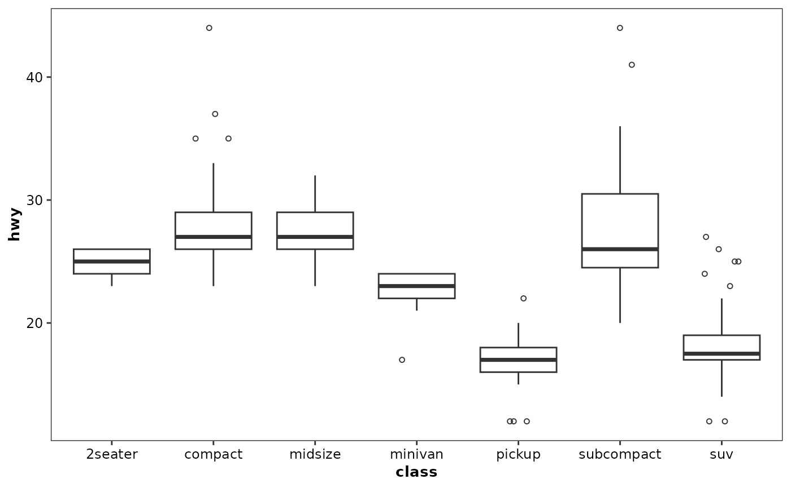
p + geom_boxplot2(outlier.position = 'identity', coef = 90)
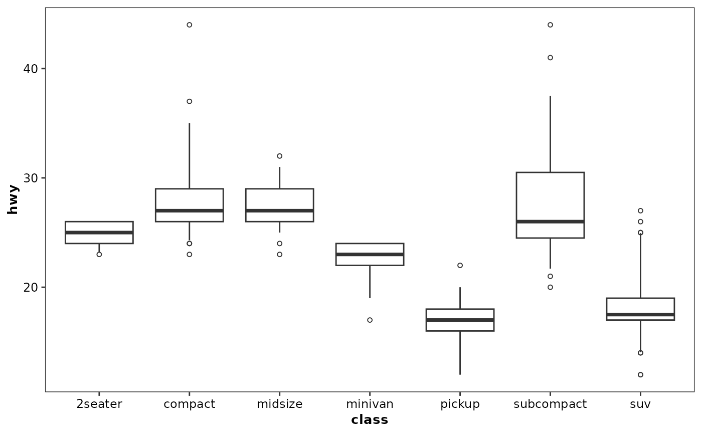
# Orientation follows the discrete axis
ggplot(mpg, aes(hwy, class)) + geom_boxplot2()
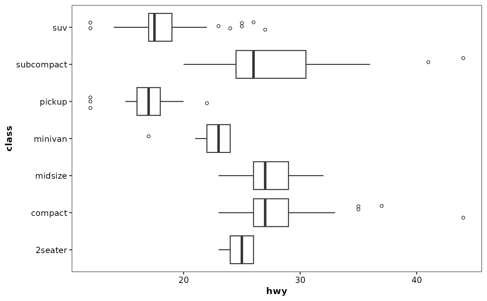
p + geom_boxplot2(notch = TRUE)
#> Notch went outside hinges
#> ℹ Do you want `notch = FALSE`?
#> Notch went outside hinges
#> ℹ Do you want `notch = FALSE`?
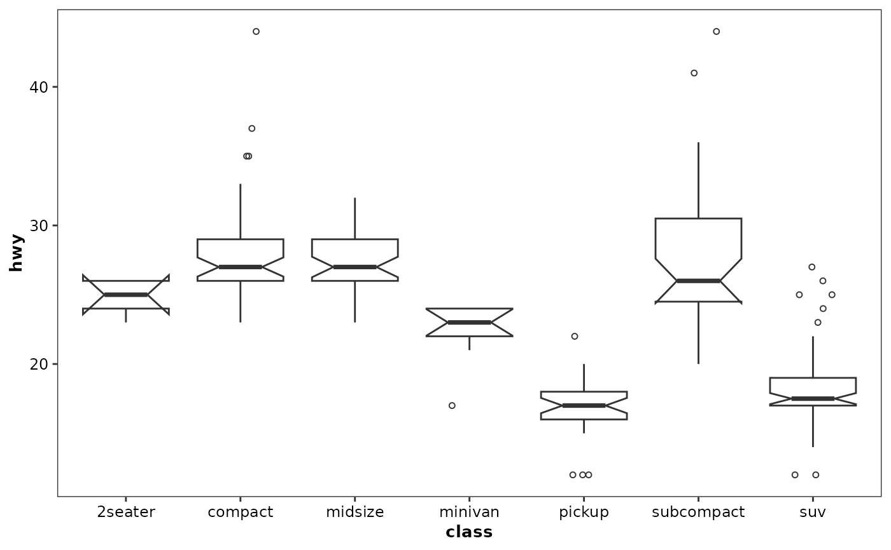
p + geom_boxplot2(whisker.cap = TRUE)
p + geom_boxplot2(varwidth = TRUE)
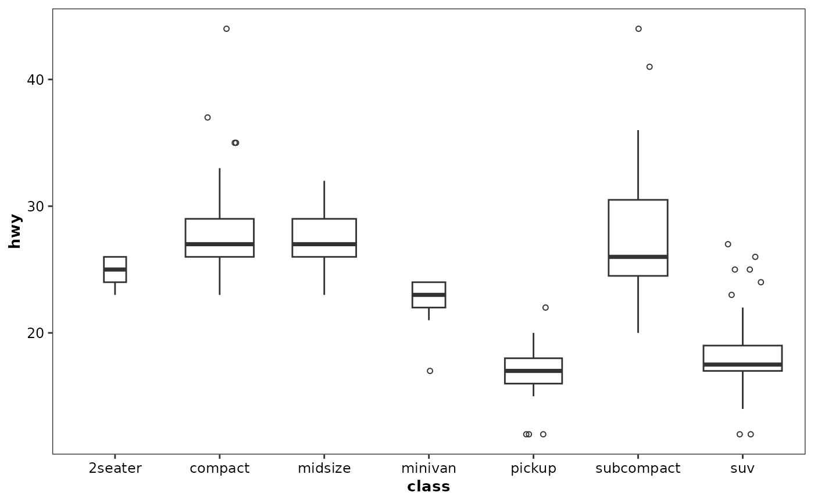
p + geom_boxplot2(fill = "white", colour = "#3366FF")
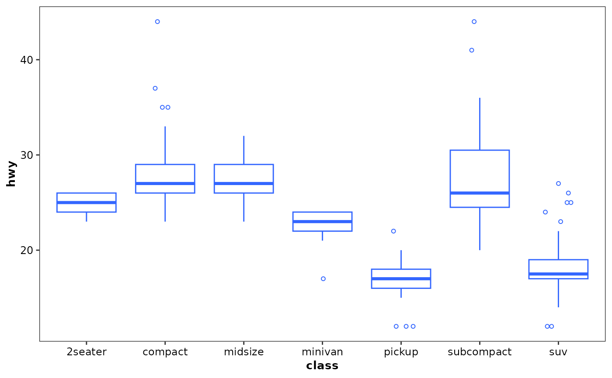
# Boxplots are automatically dodged when any aesthetic is a factor
p + geom_boxplot2(aes(colour = factor(drv)))
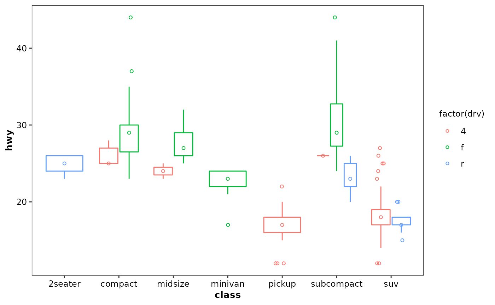
# Use the median_symbol argument to control how the median is drawn
p + geom_boxplot2(aes(colour = factor(drv)), median_symbol = FALSE)
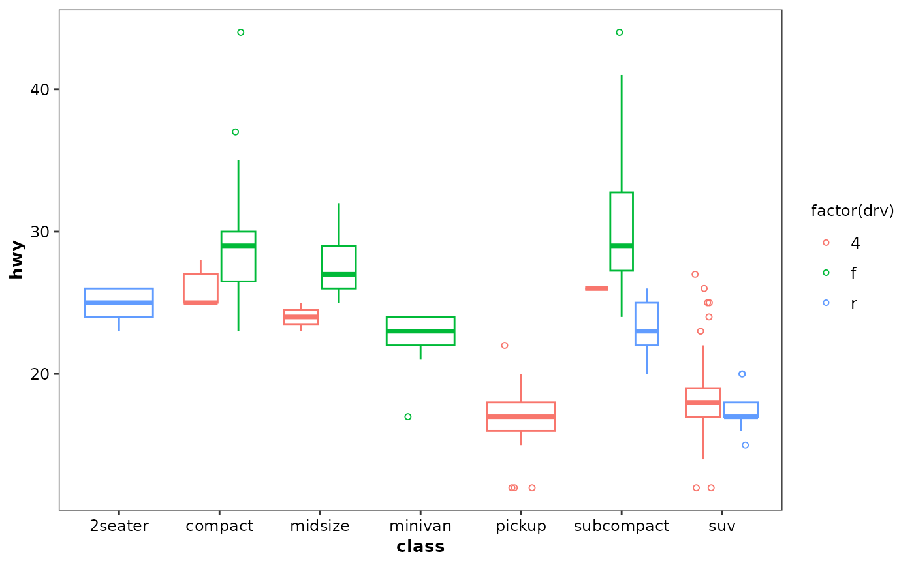
# You can also use boxplots with continuous x, as long as you supply
# a grouping variable. cut_width is particularly useful
ggplot(diamonds, aes(carat, price)) +
geom_boxplot2()
#> Warning: Continuous x aesthetic -- did you forget aes(group=...)?
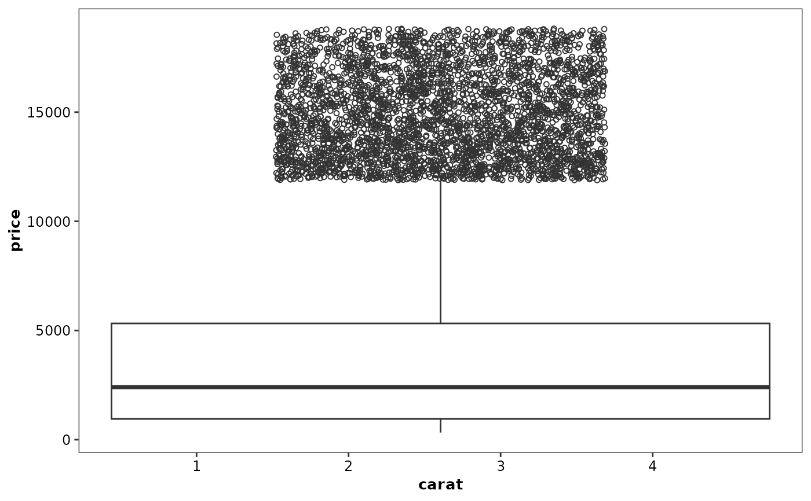
ggplot(diamonds, aes(carat, price)) +
geom_boxplot2(aes(group = cut_width(carat, 0.25)))
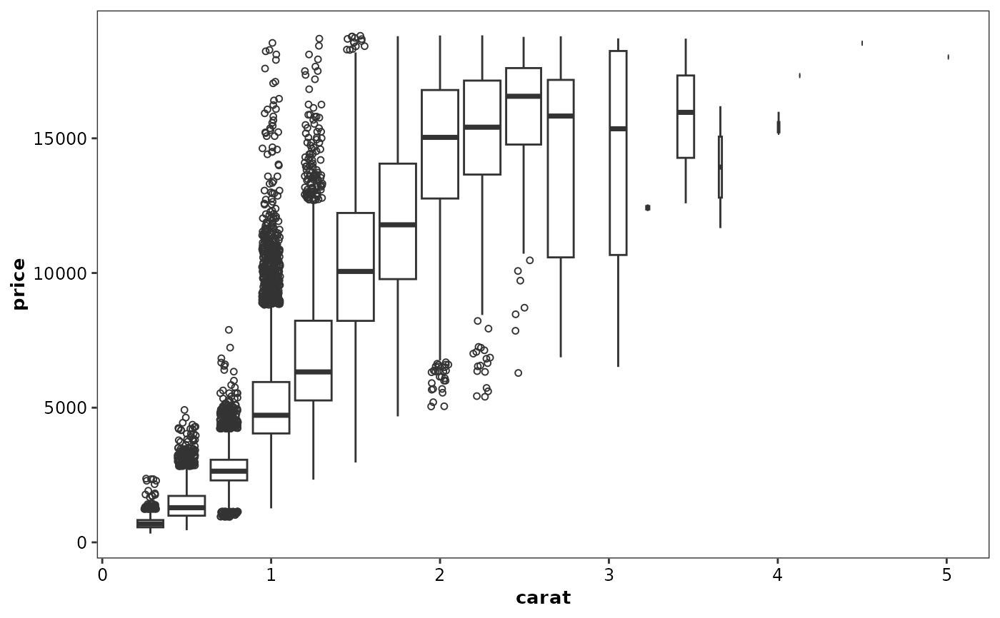
# Adjust the transparency of outliers using outlier.alpha
ggplot(diamonds, aes(carat, price)) +
geom_boxplot2(aes(group = cut_width(carat, 0.25)), outlier.alpha = 0.1)
#> The following arguments are not used in geom_boxplot2:
#> outlier.colour, outlier.color, outlier.fill, outlier.shape,
#> outlier.size, outlier.stroke, and outlier.alpha
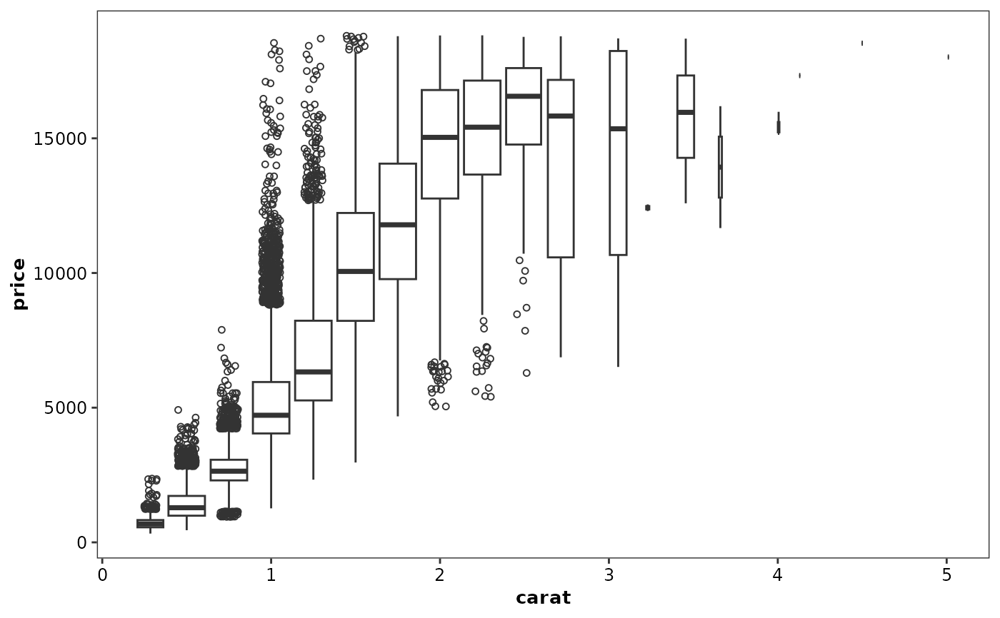
# It's possible to draw a boxplot with your own computations if you
# use stat = "identity":
y <- rnorm(100)
df <- data.frame(
x = 1,
y0 = min(y),
y25 = quantile(y, 0.25),
y50 = median(y),
y75 = quantile(y, 0.75),
y100 = max(y)
)
ggplot(df, aes(x)) +
geom_boxplot2(
aes(ymin = y0, lower = y25, middle = y50, upper = y75, ymax = y100),
stat = "identity"
)
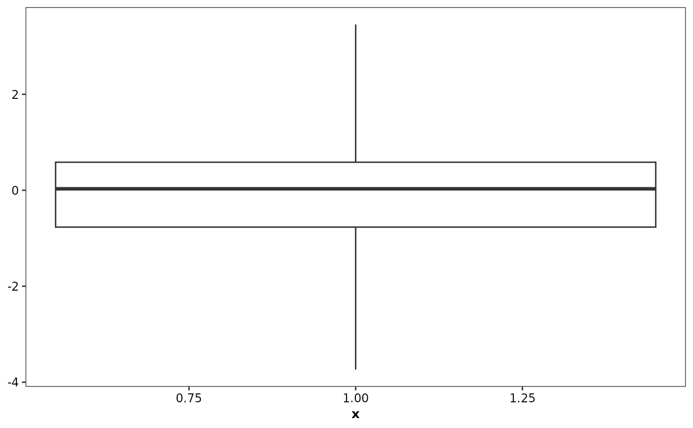